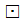
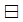
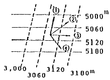
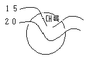
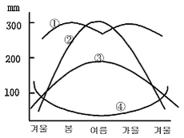
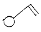
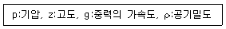

기상기사 (2006-03-05 기출문제)
1과목: 기상관측법
1. 다음 중 최초의 기상위성은?
- TIROS
- NIMBUS
- SMS
- NOAA
(정답률: 알수없음)

2. 고층 관측 시 사용되는 라디오존데 부착용 기구 (balloon)의 주입가스로 주로 사용되는 가스 종류는?
- 헬륨
- 질소
- 오존
- 이산화탄소
(정답률: 알수없음)
3. 전운량(tatal cloud cover)과 층별운량(cloud amount)에 관한 설명 중 옳은 것은?
- 층별운량을 합하면 항상 전운량이 된다.
- 전운량은 층별운량의 합보다 적을 수 있다.
- 전운량과 층별운량은 항상 같을 수 없다.
- 최상층의 운량과 전운량은 같게 된다.
(정답률: 알수없음)
4. 대기 중 물현상(hydrometeors)으로 극히 작은 수적이나, 습한 흡습성(吸濕性)의 입자가 떠있는 현상으로, 수평시정이 1km 이상인 경우를 무엇이라고 하는가 ?
- 이슬(dew)
- 박무(mist)
- 우박(hail)
- 연무(haze)
(정답률: 알수없음)
5. 지상 기상 관측에 있어 관측시간 정각에 행하여야 하는 것은?
- 우량계
- 자기 습도계
- 건구 온도계
- 수은 기압계
(정답률: 알수없음)
6. 안개비의 정의와 관련이 없는 것은？
- 강수량은 보통 1시간에 1mm미만이다.
- 보통 연속된 두꺼운 하층운에서 내린다.
- 직경은 0.5mm 미만이다.
- 운고는 대단히 낮으며 지면에 까지 도달하면 안개로 되는 수가 많다.
(정답률: 알수없음)
7. CW 레이다(Radar)를 설명한 것이다. 적당하치 않은 것은?
- 연속파(continuous waves)를 발신하는 레이다이다.
- 좁은 대역폭(bandwidth)으로 가능하다.
- 변조(modulated)된 파만을 사용하여야 한다.
- 낮은 출력(low power)으로 가능하다.
(정답률: 알수없음)
8. hPa, g/cm3, g/㎏, % 등의 단위를 사용하는 기상요소는?
- 대기압
- 대기온도 및 노점
- 대기의 수증기 함유량
- 눈의 비중
(정답률: 알수없음)
9. 곡관지중온도계는 어느 정도 깊이까지의 지중온도를 측정할 수 있는가?
- 30cm
- 60cm
- 90cm
- 120cm
(정답률: 알수없음)
10. 기온이 빙점 이하인 경우 통풍건습계에 의한 습도관측에 관한 설명 중 옳은 것은?
- 습구가 얼거나 과냉각 상태로 된 때에는 경우마다 다른 상용표를 이용한다.
- 습구가 얼면 바로 직전의 시도를 읽는다.
- 습구가 얼면 정확한 습도를 알 수 없으므로 이 때에는 모발습도계의 값을 기준한다.
- 빙점 이하에서 습구는 항상 얼게 되어 있으므로 과냉각상태는 고려할 필요가 없다.
(정답률: 알수없음)
11. 다음 기상관측에 관한 설명 중 틀린 것은?
- 관측된 기상요소는 일반적인 기상상태를 대표할 수 있어야 한다.
- 관측노장은 항상 햇볕이 내려 쬐는 위치에 설치하는 것이 좋다.
- 국제표준통보 관측시각은 한국표준 시간으로 3시, 9시, 15시, 21시이다.
- 관측 측기는 간편하고 결과를 빨리 얻을 수 있는 것이 좋다.
(정답률: 알수없음)
12. 대기의 빛 현상(photpmeteors)을 나타내는 기호 설명이다. 관계가 서로 맞는 것은?
- 달무리-

- 무지개- ɤ
- 신기루-

- 채운-

(정답률: 알수없음)
13. 기상요소와 관측 단위의 관계를 나타낸 것 중 틀린 것은?
- 상대습도 - %
- 운량 - oktas
- 증발량 - gram
- 일사량 - ㎈/cm2
(정답률: 알수없음)
14. 다음 바람 중 큰 규모 기압분포에 의하여 부는 것은?
- 해륙풍
- 산곡풍
- 지균풍
- 활강풍
(정답률: 알수없음)
15. 훅 게이지(hook gauge)는 무슨 측기에 부착되어 있는가?
- 수은 기압계
- 자기기록 습도계
- 대형 증발계
- 자기기록 온도계
(정답률: 알수없음)
16. 다인(dyne)의 설명 중 맞는 것은?
- 차원이 gm. cm/sec2 이다.
- 에너지의 단위이다.
- 차원이 gm. cm/sec 이다.
- 공률의 단위이다.
(정답률: 알수없음)
17. 돕슨 스펙트로포토메타(Dobson spectrophotometer)는 대기 중의 어떤 함유량을 결정하는 기기인가?
- 아르곤
- 탄산가스
- 오존
- 질소
(정답률: 알수없음)
18. 다음은 WMO(세계기상기구)에서 제정한 지면 상태를 나타내는 기호이다. 이 중에서 얼어 있는 지면 상태를 나타내는 것은?


(정답률: 알수없음)
19. 강수현상이 전혀 없는 경우의 기입 방법은?
- -
- 0
- 0.0
- 결측
(정답률: 알수없음)
20. 일반적으로 구름을 통해서 해나 달의 위치를 확인할 수 있을 정도로 엷어서 광환 혹은 채운현상을 관측할 수 있는 구름은?
- 권운 (Ci)
- 권적운(Cc)
- 고츠운(As)
- 층운(St)
(정답률: 알수없음)
2과목: 대기열역학
21. 열역학선도에 표시된 상태곡선의 양의 면적(positive area)이 음의 면적(negative area)보다 넓은 경우는?
- 대류 불안정
- 잠재 불안정
- 조건부 불안정
- 위잠재 불안정
(정답률: 알수없음)
22. 정적으로 안정된 대기에서 상하로 진동하는 공기 덩어리(air parcel)의 복원력이 가장 큰 경우는?
- 기압이 높은 대기
- 높이에 따라 온위의 증가량이 큰 대기
- 수증기를 많이 포함한 대기
- 대류 유효 위치에너지(CAPE)가 큰 공기
(정답률: 알수없음)
23. 온위(溫位, potential temperature)가 일정하면 엔트로피는?
- 진동
- 감쇠
- 일정
- 부정(不定)
(정답률: 알수없음)
24. 열역학선도상에서 폐곡선으로 이루어진 면적이 에너지의 단위로 되지 않는 선도는?
- Clapeyron 선도
- Tephigram
- Emagram
- Stüve 선도
(정답률: 알수없음)
25. 같은 기압과 기온에서 같은 체적의 건조공기와 습윤 공기의 질량은 다르다. 다음 중 그 이유로서 맞는 것은?
- 건조공기의 질량이 수증기보다 크기 때문이다.
- 수증기의 질량이 건조공기보다 크기 때문이다.
- 습윤공기가 건조공기보다 밀도가 큰 경우가 많기 때문이다.
- 건조공기에는 수증기를 더 많이 포함시킬수 있기 때문이다.
(정답률: 알수없음)
26. 기압의 차원(dimension)을 옳게 쓴 것은?
- [kg·m·s-2]
- [kg·m2·s-2]
- [kg·m-1·s-2]
- [kg·m-2·s-2]
(정답률: 알수없음)
27. 열의 이동이 매질의 이동에 의해 이루어지는 것은?
- 전도
- 복사(방사)
- 대류
- 위에는 해당이 없음
(정답률: 알수없음)
28. 공기 중에 포함된 건조공기의 질량에 대한 수증기의 질량비는?
- 절대습도
- 상대습도
- 비습
- 혼합비
(정답률: 알수없음)
29. 표준대기의 다음 부분에서 가장 안정한 곳은?
- 대류권 중부
- 성층권 하부
- 중간권 중부
- 대류권 상부
(정답률: 알수없음)
30. 건조공기에서 (등압비열/등적비열)의 값은?
- 0.78
- 0.29
- 1.40
- 0.07
(정답률: 알수없음)
31. 다음은 대기중에 들어 있는 수증기량을 나타내는 단위이다. 단위 부피(m3)당의 수증기의 질량(g)으로 표현하는 습도는 어느 것인가?
- 상대습도(相對濕度)
- 비습(比濕)
- 혼합비(混合比)
- 절대습도(絶對濕度)
(정답률: 알수없음)
32. 공기덩이를 건조단열과정을 밟게 해서 임의의 1000 hPa면까지 옮겨 놓는다면, 그 때 공기덩이가 갖는 온도는?
- 가온도
- 습구온도
- 온위
- 상당온위
(정답률: 알수없음)
33. 다음 중에서 상당온위가 일정한 선은?
- 등온선
- 건조단열선
- 포화단열선
- 등포화혼합비선
(정답률: 알수없음)
34. 대기중에서 건조단열 기온감율은 평균기온감율의 대략 몇 배인가?
- 약 0.5배
- 약 1.5배
- 약 2배
- 약 4배
(정답률: 알수없음)
35. 물이 증발하여 수증기로 변화한다. 일정한 압력하에서 이상의 변화가 나타난다면 이와 관련된 잠열은 무엇과 같은가?
- 내부에너지의 변화량
- 엔트로피의 변화량
- 엔탈피의 변화량
- 자유에너지의 변화량
(정답률: 알수없음)
36. 다음 중에서 건조대기의 불안정을 바르게 설명한 것은?
- 온도가 연직방향으로 증가한다.
- 온도가 연직방향으로 건조단열감율보다 작게 감소한다.
- 온위가 연직방향으로 증가한다.
- 온위가 연직방향으로 감소한다.
(정답률: 알수없음)
37. 대기중의 에너지는 위치에너지, 내부에너지, 운동에너지로 크게 나누어 생각할 수 있는데 내부에너지가 증가하면 위치에너지는?
- 증가한다.
- 점점 감소한다.
- 없어진다.
- 변환한다.
(정답률: 알수없음)
38. 엔트로피(ø)와 온위(θ)와의 관계를 옳게 나타낸 식은?
- θ=Cp lnø + constθ
- ø=Cp lnθ + const
- ø=R lnθ + const
- θ=R lnθ + const
(정답률: 알수없음)
39. 지구 중력(重力, gravity)에 대한 설명 중 잘못된 것은?
- 중력은 지역에 따라 달라 대기과학에서는 변수로 취급하고 있다.
- 중력은 지역과 높이에 따라 다르나, 그 차가 미미해 대기과학의 범위 내에서는 상수로 취급하고 있다.
- 중력은 인력과 원심력의 합력(合力)이다.
- 표준중력은 약 980 cm/s2 정도이다.
(정답률: 알수없음)
40. 단열선도(skew T-log P diagram)에는 기본 등치선이 몇 가지 그려져 있는가? (단, 층후선은 제외)
- 3
- 5
- 7
- 10
(정답률: 알수없음)
3과목: 대기운동학
41. 다음 중 잘 발달한 저기압계에서 볼 수 있는 현상은?
- 상,하층 모두 강한 발산이 일어난다.
- 하층에 강한 수렴, 상층에 약한 수렴이 일어난다.
- 하층에 강한 발산, 상층에 강한 수렴이 일어난다.
- 하층에 강한 수렴, 상층에 강한 발산이 일어난다.
(정답률: 알수없음)
42. 대기 중에서 파동에 의한 열의 남북 수송량이 가장 큰 위도대는?
- 북위 30도
- 북위 40도
- 북위 50도
- 북위 60도
(정답률: 알수없음)
43. 코리올리인자(Coriolis parameter)를 맞게 표시한 것은? (단, Ω: 지구의 자전 각속도, ø: 위도)
- 2Ωsinø
- Ωsinø
- 2sinø
- 1/3sinø
(정답률: 알수없음)
44. 다음 보기 중 관련이 가장 적은 것은?
- 순압 대기
- 경압 대기
- 수평온도 경도의 존재
- 풍속의 연직 층밀림(shear) 존재
(정답률: 알수없음)
45. 해상기온이 동쪽으로 2℃/200Km로 낮아지고 있는 지역을 배가 동쪽으로 시속 10Km로 가면서 측정한 기온이 1℃/2시간씩 하강하였다면 이 배가 통과하고 있는 지역에서의 기온 변화는?
- 시간당 0.4℃로 낮아진다.
- 시간당 0.4℃로 높아진다.
- 시간당 0.5℃로 낮아진다.
- 시간당 0.5℃로 높아진다.
(정답률: 알수없음)
46. 대기 중에 로스비파(Rossby wave)가 존재하는 원인은?
- 공기밀도의 변화
- 지구 중력
- 위도에 따른 코리올리 인자의 변화
- 지표면 마찰
(정답률: 알수없음)
47. 다음 중 거칠기 길이(roughness length)가 가장 긴 것은?
- 경작지
- 모래 해변
- 대도시 주거지
- 툰드라 지대
(정답률: 알수없음)
48. 운동하고 있는 물체와 마찰의 관계 중 틀린 것은?
- 마찰력의 방향은 운동방향과 반대이다.
- 마찰력은 운동속도에 반비례한다.
- 마찰력이 클수록 운동속도는 감소한다.
- 마찰력은 운동하고 있는 물체의 넓이에 비례한다.
(정답률: 알수없음)
49. 라니냐와 관련된 사항 중 맞는 것은?
- 무역풍의 약화와 관련되어 있다.
- 서태평양에서의 기압이 높아진다.
- 동태평양에서의 대류활동이 강화된다.
- 서태평양의 수온이 평년보다 증가한다.
(정답률: 알수없음)
50. 지표면 부근에서 바람이 등압선과 각을 이루고 불게 되는 요인이 되는 것과 가장 거리가 먼 것은?
- 중력
- 전향력
- 기압경도력
- 마찰력
(정답률: 알수없음)
51. Ekman층에 대한 설명 중 옳지 않은 것은?
- 에크만 층내에서도 저기압 쪽으로 향하는 흐름이 있다.
- 층 내에는 높이에 따라 에디의 크기가 선형적으로 증가한다.
- 바람은 나선형 구조를 가진다.
- 기압경도력, 코리올리 힘, 마찰력이 균형을 이루는 층이다.
(정답률: 알수없음)
52. 북반구의 상이한 두 등압면에서의 고도를 나타낸 다음 그림 중 온도풍의 방향을 올바르게 나타낸 것은?

- ①
- ②
- ③
- ④
(정답률: 알수없음)
53. 코리올리 인자에 대한 다음 표현 중 옳은 것은?
- 코리올리 인자의 값은 북반구에서 고위도로 갈수록 감소한다.
- 코리올리 인자는 남반구에서 음의 값을 갖는다.
- 코리올리 인자는 beta 인자의 남북경도를 말한다.
- beta 평면은 코리올리 인자를 상수로 간주하는 것을 말한다.
(정답률: 알수없음)
54. Jet-기류(제트기류)에 대한 설명 중 옳지 않은 것은?
- 겨울철 동서풍속의 최대값이 나타나는 곳은 북반구 대륙동안이다.
- 겨울철 동서풍속의 최소값이 나타나는 곳은 북아프리카이다.
- 겨울철 jet-기류가 위치하는 평균위도는 약 27° N 이다.
- 여름철 jet-기류가 위치하는 평균위도는 약 42° N 이다.
(정답률: 알수없음)
55. 각속도가 Ω, 회전 중심축으로부터의 거리가 r 로 주어질 때, r=a 인 원주에 대한 순환(circulation)은?
- 2Ω Π a4
- 2Ω Π a3
- 2Ω Π a2
- 2Ω Π a
(정답률: 알수없음)
56. 북반구의 겨울철에 잘 발달하지 않는 기압계는?
- 시베리아 고기압
- 북미 고기압
- 알류션 저기압
- 북태평양 고기압
(정답률: 알수없음)
57. 북위 45°에서 풍속이 10m/s이다. 이 공기덩이에 작용하는 단위질량당 전향력의 크기는?
- 약 1 × 10-4 Nkg-1
- 약 5 × 10-4 Nkg-1
- 약 1 × 10-3 Nkg-1
- 약 5 × 10-3 Nkg-1
(정답률: 알수없음)
58. 지균풍을 구할 때 도입된 가정이 아닌 것은?
- 지면과의 마찰을 무시
- 구심 가속도를 무시
- 관성 가속도를 무시
- 코리올리힘에 의한 가속도를 무시
(정답률: 알수없음)
59. 경도풍(gradient wind)에 대한 설명 중 옳지 않은 것은?
- 등고선이 직선이 아닌 경우의 바람이다.
- 저기압성인 경우에는 경도풍이 지균풍보다 크다.
- 북반구에서 저기압을 왼쪽에 두고 불어간다.
- 기압경도력, 원심력, 전향력이 평형을 이루며 분다.
(정답률: 알수없음)
60. 다음의 와도에 관한 설명 중 옳은 것은?
- 직선 운동을 하는 유체의 와도는 항상 0이다.
- 곡선운동을 하는 유체의 와도는 항상 0이 아니다.
- 제트류의 북쪽이 일반적으로 와도가 더 크다.
- 종관규모의 운동에서 일반적으로 행성와도보다 상대와도의 값이 더 크다.
(정답률: 알수없음)
4과목: 기후학
61. 쾨펜(Köppen)의 기후 분류 기호 중 틀린 것은?
- A : 열대기후
- B : 아열대기후
- C : 온대기후
- E : 한 대기후
(정답률: 알수없음)
62. 다음 해륙풍에 대하여 설명 중 적합하지 못한 것은?
- 여름철보다는 바람이 강한 겨울철에 강하다.
- 해풍이 풀면 기온이 내려가고 상대습도는 올라간다.
- 해풍은 오전 10시 경에 시작하여 오후 8시 경에 끝나게 된다.
- 육풍은 해풍의 경우보다 일반적으로 약하다.
(정답률: 알수없음)
63. 다음 설명 중 틀린 것은?
- 기후 요소에는 기온, 일사, 습도, 강수, 바람, 운량 등이 있다.
- 기후 인자는 위도, 고도, 해륙분포, 지형 등이다.
- 기후의 3대 요소는 기온, 습도, 바람이다.
- 기단, 전선, 대기순환 등도 기후 인자이다.
(정답률: 알수없음)
64. 산곡풍(山谷風)에 관한 설명 중 옳은 것은?
- 낮에 계곡을 향해서 불어 내리는 바람이 곡풍이다.
- 밤에 계곡을 향해서 불어 내리는 바람이 곡풍이다.
- 낮에 정상을 향해서 부는 바람이 곡풍이다.
- 밤에 정상을 향해서 부는 바람이 곡풍이다.
(정답률: 알수없음)
65. 클라이모그래프(climograph)는 다음 중 어느 요소의 월평균 값을 이용한 그래프인가?
- 기온과 기압
- 기온과 바람
- 기온과 습도
- 기온과 일사량
(정답률: 알수없음)
66. 쾨펜(Köppen)은 무엇을 기준으로 열대기후(熱帶氣候), 온대기후(溫帶氣候), 냉대기후(冷帶氣候)를 구분하였는가?
- 최난월(最暖月)의 평균기온
- 최한월(最寒月)의 평균기온
- 연 평균기온
- 연 최저기온
(정답률: 알수없음)
67. 대륙도(n)를 나타내는 Zenker의 식은? (단, A는 기온의 상대연교차임)
- n = (6/5) × A - 20
- n = (5/6) × A - 20
- n = (6/5) × A + 20
- n = (5/6) × A + 20
(정답률: 알수없음)
68. 다음 그림은 어느 계절의 전형적인 온도분포를 나타내고 있는가? (단, 이 대륙은 북반구에 위치한다.)

- 봄
- 여름
- 가을
- 겨울
(정답률: 알수없음)
69. 지구상에서 하루에 받는 태양에너지가 가장 큰 시기와 지역은?
- 하지 때의 적도
- 하지 때의 북위 30도
- 동지 때의 남위 30도
- 동지 때의 남극
(정답률: 알수없음)
70. 계절풍(monsoon)에 대한 설명 중 틀린 것은?
- 계절풍의 방향은 겨울철에 대륙쪽으로 향한다.
- 계절풍은 탁월풍(prevailing wind)의 일종이다.
- 계절풍의 풍향은 여름철과 겨울철에서 대략 반대방향이다.
- 계절풍이 가장 뚜렷한 지역은 인도와 그에 인접된 남동 아시아 지역이다.
(정답률: 알수없음)
71. 대기권으로 입사되는 태양에너지 중 지표면에 흡수되는 백분율은 약 얼마나 되나?
- 30 %
- 50 %
- 60 %
- 70 %
(정답률: 알수없음)
72. 다음 그림 중 계절풍형 강수 형태를 표시한 것은? (단, 도표의 중심부가 여름철이다.)

- ①
- ②
- ③
- ④
(정답률: 알수없음)
73. 기온의 연교차(年較差)란?
- 1년중 최고기온과 최저기온의 차이다.
- 8월의 평균기온과 2월의 평균기온의 차이다.
- 최난월의 평균기온과 최한월의 평균기온 차이다.
- 여름철의 평균기온과 겨울철의 평균기온 차이다.
(정답률: 알수없음)
74. 기후 변동의 Brückner 주기는?
- 5년주기
- 11년주기
- 22년주기
- 35년주기
(정답률: 알수없음)
75. 지구에서 복사에너지의 수지가 대체로 균형을 이루는 위도대는?
- 15~20°
- 35~40°
- 55~60°
- 75~80°
(정답률: 알수없음)
76. 다음 지역들 중 탁월풍에 의한 다우지역이 아닌 곳은?
- 히말라야 산맥 남쪽
- 중앙아메리카 동해안
- 일본의 남서지방
- 말레이 반도
(정답률: 알수없음)
77. 세로축에 월 평균기온을 잡고 가로축에는 월 강수량을 잡아 월별 분포를 나타낸 것은?
- 하이더그래프(Hythergraph)
- 클라이모그래프(Climograph)
- 모노그래프(Monograph)
- 단면도(Cross-section)
(정답률: 알수없음)
78. 위도 30° 부근에서 60° 부근 사이의 지표면을 북반구에서는 북동쪽, 남반구에서는 남동쪽으로 향하여 불어가는 바람은 무엇인가?
- 무역풍
- 극풍
- 편서풍
- 지균풍
(정답률: 알수없음)
79. 우리나라 기후의 일반적 특성이 아닌 것은?
- 쾨펜의 11개 주요 기후구 중 주로 C와 D의 기후구에 속한다.
- 연평균 기온은 6~16℃ 분포로 지역 차가 크다
- 습도는 8월에 가장 높아 80~90%의 분포를 보인다.
- 남부지방의 연강수량은 1500mm 정도이다.
(정답률: 알수없음)
80. 어떤 지점의 기후를 말할 때 기온의 일교차가 중요한 요소가 된다. 다음 중 옳은 것은?
- 맑은 날과 구름 낀 날의 일교차는 맑은 날이 일교차가 작게 나타난다.
- 해안에서 내륙으로 갈수록 일교차는 작아진다.
- 초원보다는 사막이 일교차가 작다.
- 표고가 높을수록 일교차는 작아진다.
(정답률: 알수없음)
5과목: 일기분석 및 예보론
81. 기상전보식에 보고되는 기압변화 경향 및 변화량(appp)은 관측시각 전 몇 시간 동안의 변화인가?
- 24시간
- 12시간
- 6시간
- 3시간
(정답률: 알수없음)
82. 겨울철 발해만에서 작은 기압골이 접근하고 있다. 앞으로의 일기예보에 있어 틀리게 예측한 것은?
- 이 기압골은 남동진하면서 발달하는 경향이 있다.
- 소백산맥 서쪽지역에 비나 눈을 오게 한다.
- 영남지방에 강풍과 폭설이 빈번하다.
- 통과한 다음 날씨가 추워진다.
(정답률: 알수없음)
83. 겨울철에 계절풍이 강하고 한파가 심할 때를 설명한 것은?
- 북고 남저의 기압 배치일 때
- cPk가 쇠약할 때
- 발달한 cPk역 내에서 저기압이 발생할 때
- 서고동저형이고 기압경도가 조밀할 때
(정답률: 알수없음)
84. 다음 기후 중 상층의 준 정체전선에 해당되는 것은?
(정답률: 알수없음)
85. 온난한 기류가 북상할 때 나타나는 구름은 다음 중 어떤 것인가?
- 적운계 구름
- 층운계 구름
- 적운계와 층운계 구름이 공존
- 상층운
(정답률: 알수없음)
86. Richardson's number가 풍속의 고도 경도에 대해 가지는 다음 관계 중 맞는 것은?
- 풍속의 고도경도에 정비례한다.
- 풍속의 고도경도에 반비례한다.
- 풍속의 고도경도의 제곱에 정비례한다.
- 풍속의 고도경도의 제곱에 반비례한다.
(정답률: 알수없음)
87. 상층기압골이 서쪽으로부터 지상저기압 위로 다가오면 지상 저기압은?
- 소멸된다.
- 강도는 그대로 지속된다.
- 약화된다.
- 발달한다.
(정답률: 알수없음)
88. 대류억제(CiN, Convective inhibition)에 관한 설명 중 틀린 것은?
- 이것이 전혀 없어야 대류운이나 용오름이 발생한다.
- 이 값이 클수록 대기는 안정하다.
- 단열선도 상에서 음성지역으로 나타난다.
- 아침에는 큰 값을 가지다가 오후에는 작아지는 경향이 있다.
(정답률: 알수없음)
89. 태풍의 구조에 대한 다음 설명 중 틀린 것은?
- 등압선은 거의 원형이다.
- 기압경도는 중심으로 갈수록 작아진다.
- 구름은 나선상으로 중심을 둘러싸고 있다.
- 강한 비바람을 동반한다.
(정답률: 알수없음)
90. 기압경도(∂p/∂n)가 30hPa/100Km, 반경이 r = 100Km인 선풍의 풍속에 대하여 다음 중 가장 알맞은 것은?
- 30 m sec-1
- 40 m sec-1
- 50 m sec-1
- 60 m sec-1
(정답률: 알수없음)
91. 수치예보 자료는 대기를 지배하는 여러 가지 물리적 법칙을 이용하여 수치예보모델을 만들고, 이를 슈퍼컴퓨터에서 운영하여 생산된다. 수치예보모델을 만들 때, 사용되는 주요 물리적 법칙이 아닌 것은?
- 잠열 보존의 법칙
- 질량 보존의 법칙
- 에너지 보존의 법칙
- 운동량 보존의 법칙
(정답률: 알수없음)
92. 일기도에 사용되는 지도 중 위도ㆍ경도가 모두 직선으로 표시되는 지도는 무슨 도법으로 만든 것인가?
- 람베르트 원추도법
- 메르카토르 원통도법
- 극 평사도법
- 원추도법과 극평사도법의 혼합
(정답률: 알수없음)
93. 지상 일기도에서 다음 그림에 나타낸 지점의 풍속은 약 얼마인가?

- 약 5 m/sec
- 약 10 m/sec
- 약 15 m/sec
- 약 20 m/sec
(정답률: 알수없음)
94. 다음 일기도 중에서 대류권 중간층을 분석하기에 적합한 것은?
- 850 hPa
- 700 hPa
- 500 hPa
- 200 hPa
(정답률: 알수없음)
95. 다음 기단(氣團) 중에서 가장 한냉하고 습한 것은?
- cPk기단
- mTw기단
- mPw기단
- cT기단
(정답률: 알수없음)
96. 다음 중 정역학 관계를 옳게 나타낸 식은?

- dp=-gρdz
- dp=-gdz
- dp=-ρdz
- dp=-dz
(정답률: 알수없음)
97. 다음 중 기온감률이 가장 작은 것은 어느 것인가?
- 역전층
- 표준대기
- 등온층
- 고온의 습윤대기
(정답률: 알수없음)
98. 지상기상전문의 Nddff란이 21299 00125 이면 풍속은?
- 129 Knots
- 299 Knots
- 12 Knots
- 125 Knots
(정답률: 알수없음)
99. 태풍에 관련하여 기술된 내용 중 올바르지 않은 것은?
- 열대수렴대(ITCZ)의 위치에 따라 발생지역이 달라진다.
- 태풍은 위도 5도 이상에서 만들어지는데, 이는 위도 5° 이내에서는 소용돌이를 만드는데 필요한 전향력이 없기 때문이다.
- 해수면온도가 약 26~28℃ 부근에서 발생한다.
- 태풍의 발달 에너지는 바람의 연직 시어(shear)이다.
(정답률: 알수없음)
100. 온난전선의 일반적인 특성이 아닌 것은?
- 전선후방에서는 풍향이 보통 남서풍이고 전방에서는 남동풍이다.
- 온난전선은 보통 저기압의 서쪽에 위치한다.
- 구름이 상층운으로부터 서서히 낮아져서 지속적인 비가 내리는 곳은 후방에 해당한다.
- 안개가 넓은 범위에 끼어있는 곳에 위치한다.
(정답률: 알수없음)